How Being a Programmer Prepared Me for Being a Parent
by Colleen Mirabello
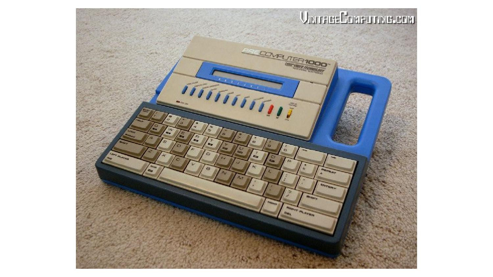
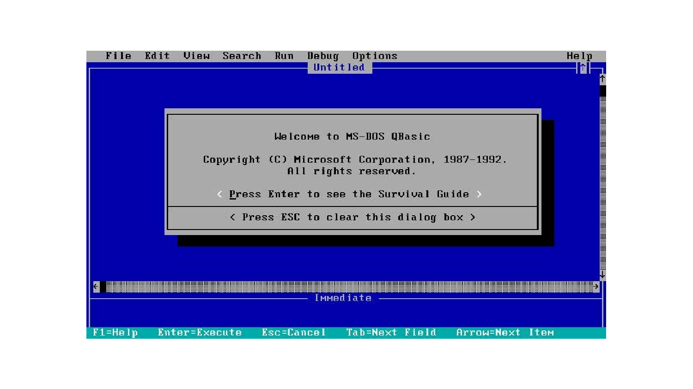
30 years
16 years
Teamwork
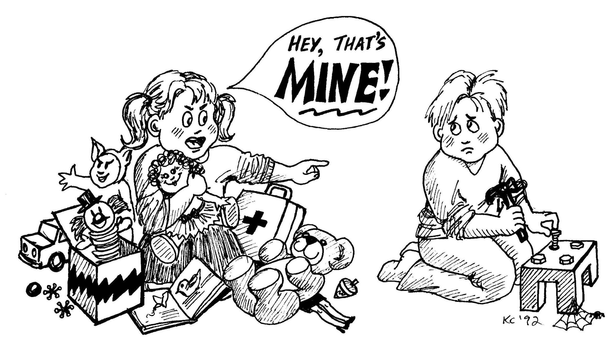
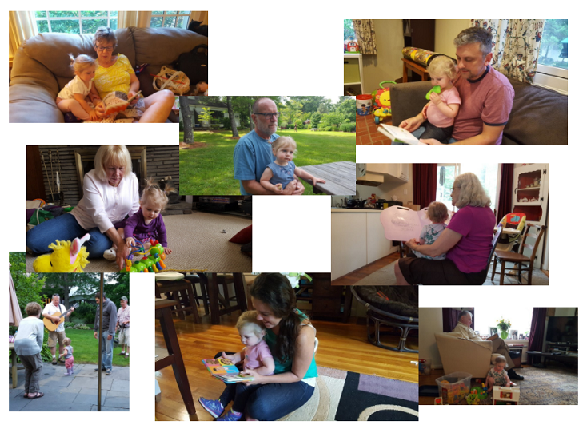
Priorities
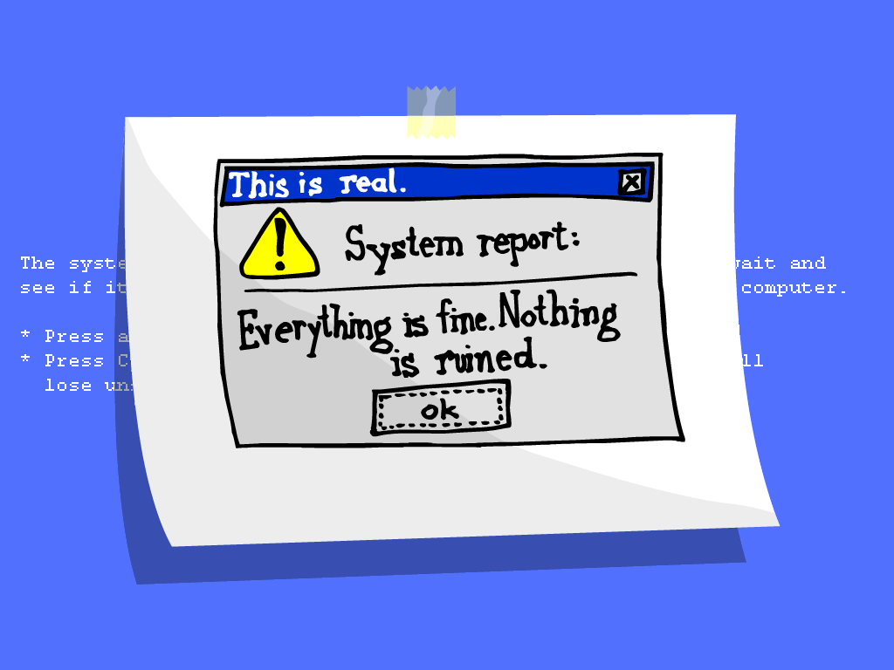
Agility
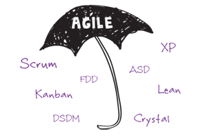
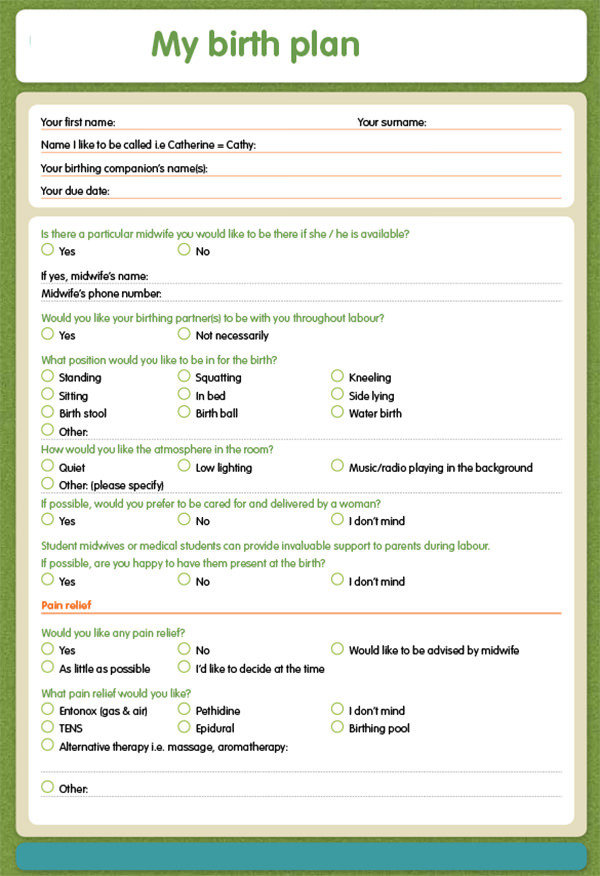
Can't we just see how it goes and iterate?
Data
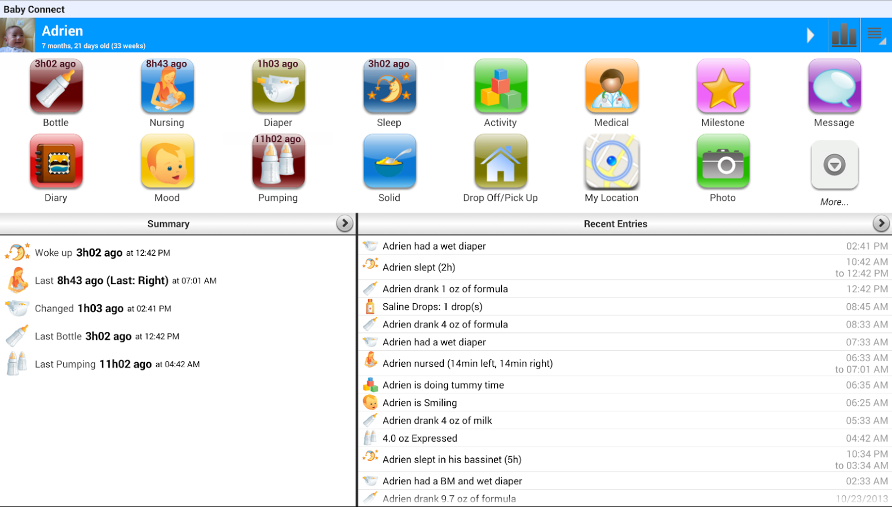
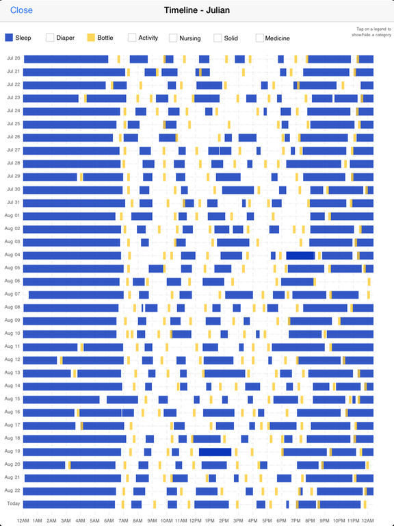
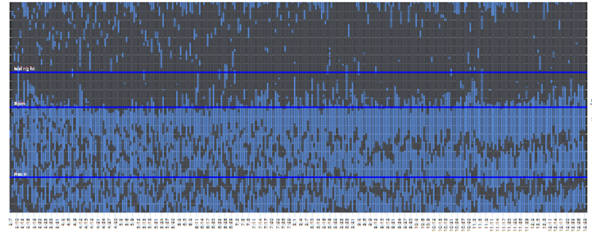
The Internet
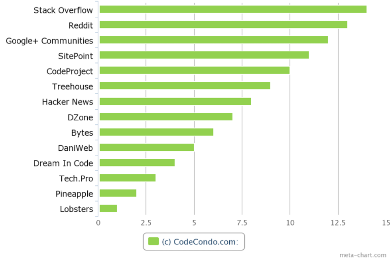
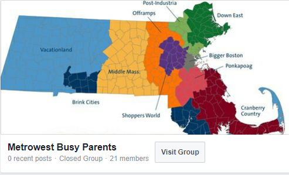
I may not know what I'm doing but I know I can figure it out